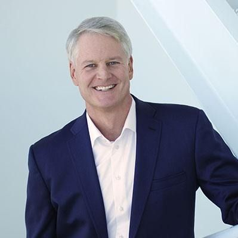

|
|---|
| Street Sutera Barat 8, Alam Sutera |
| Phone Number : 021-6611552 |
|  | John Donahoe was born in Evaston, Illinois on April 30, 1960 In March 2 005 he was hired as president of eBay Marketplaces. His role was to focus on eBay's core business, which accounts for a large percentage of the company's revenues. In 2008, He was appointed CEO of eBay. He made more than forty acquisitions, including Shopping.com and StubHub, and the classifieds sites Gumtree and LoQUo, and most recently, Shutl. After his departure from eBay in 2015, Donahoe was replaced by eBay Marketplaces president, Devin Wenig. In February 2017, he was announced as the president and CEO of ServiceNow, a software company that he became familiar with while working at eBay. He served on the Board of Trustees of Dartmouth College from 2003 to 2012. In October 2019, he was announced as the next CEO of Nike, and succeeded Mark Parker on January 13, 2020. |
|---|